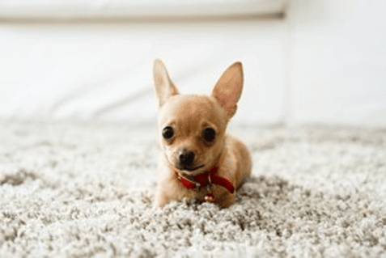
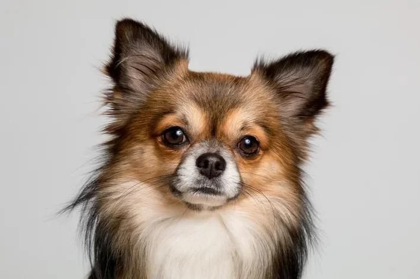

KIARA & MOANA
Elas são irmãs inseparáveis resgatadas de maus-tratos. Sofreram abandono e foram judiadas por humanos insensíveis, mas não perderam sua docilidade e ternura. Sociáveis, dóceis, saudáveis e elegantes, estão acolhidas em lar temporário, ansiosas para expressarem seu amor por uma família maravilhosa...
Se deseja adotar, por favor, preencha o formulário.
×
PINGO
Sem raça definida, Macho, Porte G, pelagem preta, dócil com outras pessoas e animais, castrado, vacinado (V10 e Raiva), vermifugado e idade estimada de 4 anos.
Se deseja adotar, por favor, preencha o formulário.
×
BLAYDE
Sem raça definida, macho, porte M, pelagem preta, dócil com outras pessoas e animais, castrado, vacinado (V10 e Raiva), vermifugado e idade estimada de 2 a 3 anos.
Se deseja adotar, por favor, preencha o formulário.
×
PINGO & BLAYDE
Os dois eram de uma pessoa que maltratava eles, não cuidava direito e mantinha eles presos por muito tempo. Uma protetora entrou em contato com a gente e conseguimos fazer o resgate deles e agora eles estão em umlLar temporário aguardando por uma família que queira adotá-los...
Se deseja adotar, por favor, preencha o formulário.
×
Encontre ou Anuncie seu bichinho perdido!
"Clique em um para ser redirecionado no WhatsApp e entre em contato!"

Chihuahua
Chihuahua, 2 aninhos, foi encontrado semi morto pelo frio. Estava com uma coleira rasgada, aparentando ter dono
Puddle
Branco como a neve, foi encontrado em nossa porta em um saquinho. Estamos procurando o dono!

Sandman
Preguiçoso, foi achado abandonado em um hotel com a coleira amarrada a uma pilastra.
(Mansão Animalão)